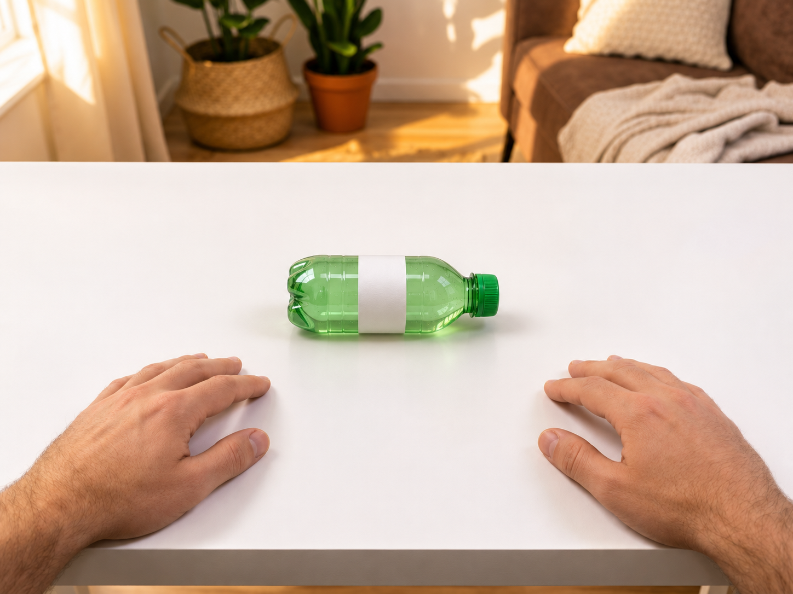
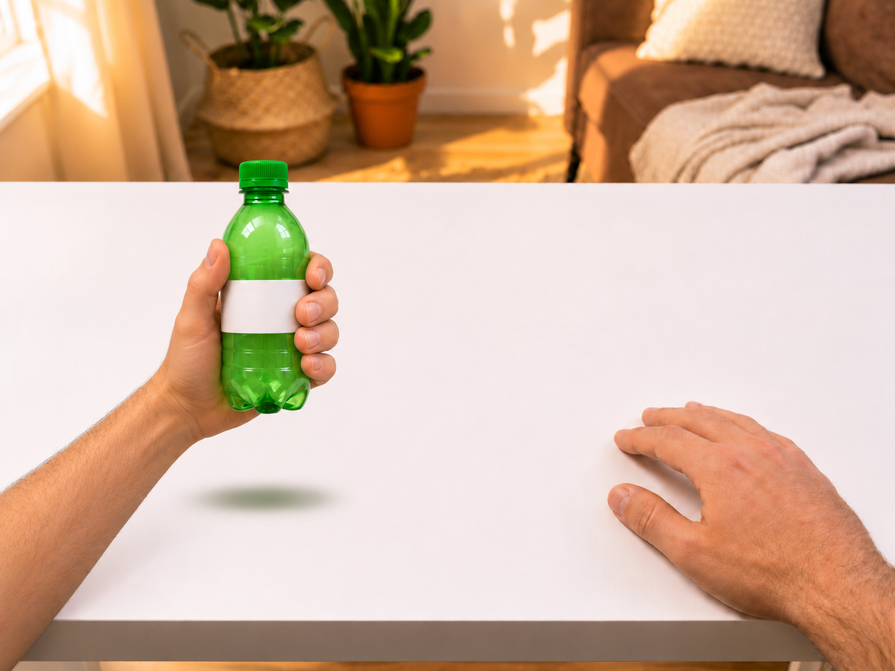

Method at a glance
- Ground the taskInspect the actual robot trajectory, synchronized camera views, task instruction, and success conditions.
- Build compatible visual contextDecompose the action, select reviewed human-video clips with compatible spatial and goal conditions, and compose a task prompt.
- Condition the world-action modelEncode the prompt and current observation, predict a robot future and action chunk, execute, and update with real observations.
Schematic summary of the project workflow.
The research question
A human demonstration specifies more than an object name: it conveys action order, contact, movement, and the intended final state. My RICL project asks how much of that information can be reused when the target robot task changes. Instead of requiring one exact human demonstration for every scene, the longer-term objective is to construct appropriate visual guidance from reusable skills.
The project separates two questions: whether a complete video from a related task transfers useful information, and whether shorter, spatially compatible clips can be composed into stronger instructions. This distinction keeps a simple transfer baseline separate from the more ambitious compositional-learning objective.
My contribution
I am building the robot-grounded data and experiment layer around the released Zero-WAM backbone: atomic action specifications, clip-composition recipes, Grid–Goal compatibility rules, reviewable data inventories, and controlled transfer evaluations. The neural backbone and its original training objectives are from the Zero-WAM authors; my work investigates how to construct and evaluate the context it receives.
I also adapted the evaluation runtime for two 24 GB GPUs through FSDP sharding, CPU placement of the text encoder and video VAE, and bounded observation history. Saved configurations distinguish these local resource choices from the released evaluation settings.
Model: video prediction coupled to action
Zero-WAM uses separate video and action experts within a causal mixture-of-Transformers model. The inspected implementation has 30 main blocks, 3,072-dimensional hidden states, and 24 attention heads. A Wan video VAE produces 48-channel latents; spatial patches are projected into video tokens, while a shared 30-channel action representation is projected into action tokens. RoboTwin uses 16 active bimanual pose-and-gripper channels within that representation.
The human video acts as a cached visual context prefix. Given current robot observations and history, the video expert first predicts the next robot-video chunk; the action expert then predicts the aligned executable action chunk. After execution, actual camera observations replace the imagined future in the rolling cache. The baseline’s four future-chunk auxiliary heads provide training supervision and are not executed in the standard inference path.
Data: preserve robot supervision, vary the human context
The data layer uses RoboTwin trajectories with robot actions and synchronized head/left-wrist/right-wrist views. The initial A–H study covers eight manipulation tasks, including moving objects onto pads, placing a fan or shoe, rotating a QR-code object, and placing cups and containers. A separate extension investigates the remaining 42 tasks.
For atomic composition, each phase selects a corresponding clip from a reviewed source pool. Selected native frames are concatenated before the complete sequence is encoded by the causal VAE; the documented trainer uses a 61-frame composed condition. The paired robot episode retains its original action supervision. Different appearances and source videos vary the visual instruction without inventing robot action labels.
Grid–Goal: compatibility beyond visual similarity
Grid–Goal maps the visible tabletop through a homography into a 3 × 3 coordinate system, using the object’s actual support footprint. GRAB matches the starting cell; PLACE matches the destination cell and task-specific final orientation. MOVE first prioritizes matching endpoints, then permits compatible relative displacements with a direction difference up to 45° and a distance ratio from 0.5 to 2. Horizontal reflection transforms the media and spatial labels together.
This is explicit geometry-and-task-conditioned source selection, rather than a demonstrated learned embedding-retrieval system. The action vocabulary also distinguishes grasping, supported placement, free release, opening, pressing, striking, holding, and handover. Source timing, video hashes, object attributes, and stage-state conditions make the resulting recipes inspectable.
A controlled full-video transfer pilot
On stamp_seal, I compared an exact target-task video, a related move_stapler_pad video, and an unrelated container-placement video, using the same ten environment seeds per condition. The completed run produced the following outcomes.
- This is a small full-video replacement pilot; it does not establish a reliable advantage for atomic composition or dynamic switching.
- The local protocol uses attention window 16 and a 3 cm stamp-placement tolerance, versus the upstream 1 cm condition; the results should not be merged with the published benchmark.
| Human-video condition | Successful episodes | Success rate |
|---|---|---|
| Exact-full | 6 / 10 | 60% |
| Transfer-full | 2 / 10 | 20% |
| Unrelated-full | 1 / 10 | 10% |
Current progress and next experiments
The data audits include 400 training and 160 evaluation scenes in the eight-task study, plus 169 proposed robot action segments from representative demonstrations of the remaining 42 tasks. Candidate availability and reviewed data coverage are tracked separately from robot rollout success. Conditioning images, full videos, and exported clips have separate acceptance stages.
The confirmed exact-grid, final-orientation, and mirror policy still needs a verified integration step in the frozen training selector before a new controlled post-training comparison. Further experiments target reverse-order and mismatched-context controls, stronger held-out-task evaluation, and execution-time clip switching. The aim is to test whether the model follows the composed task specification, rather than merely behaving plausibly.
Project visuals





Related resources
- Zero-WAM: In-Context World-Action Modeling from Human Videos for Open-Ended Task GeneralizationThe backbone, original model objectives, and published baseline results are credited to its authors.
- Zero-WAM reference implementation
- RoboTwin 2.0
Based on my retained RICL research specifications, Grid–Goal policies and audits, source-code inspection of the released backbone, and the completed September 2026 paired-seed transfer experiment. Ongoing work; reported local pilot outcomes use the explicitly stated protocol.